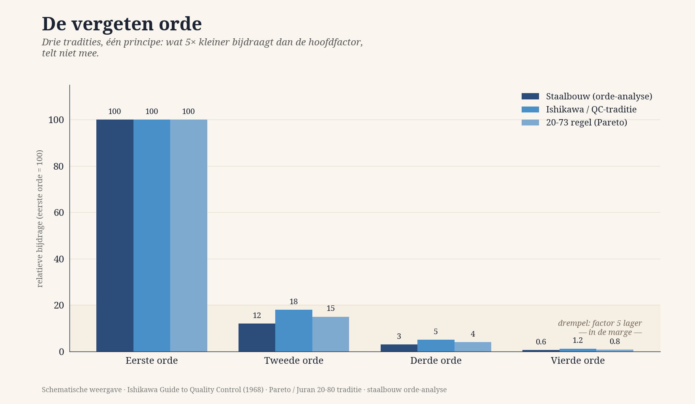
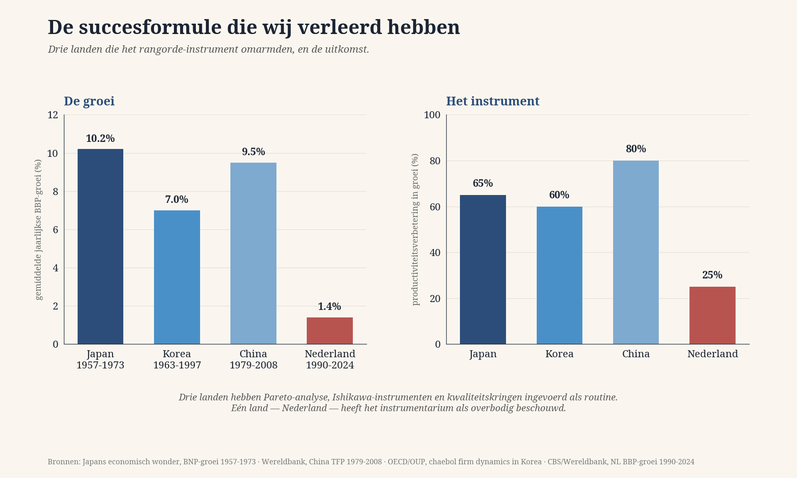
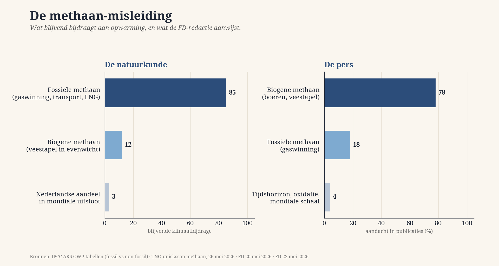
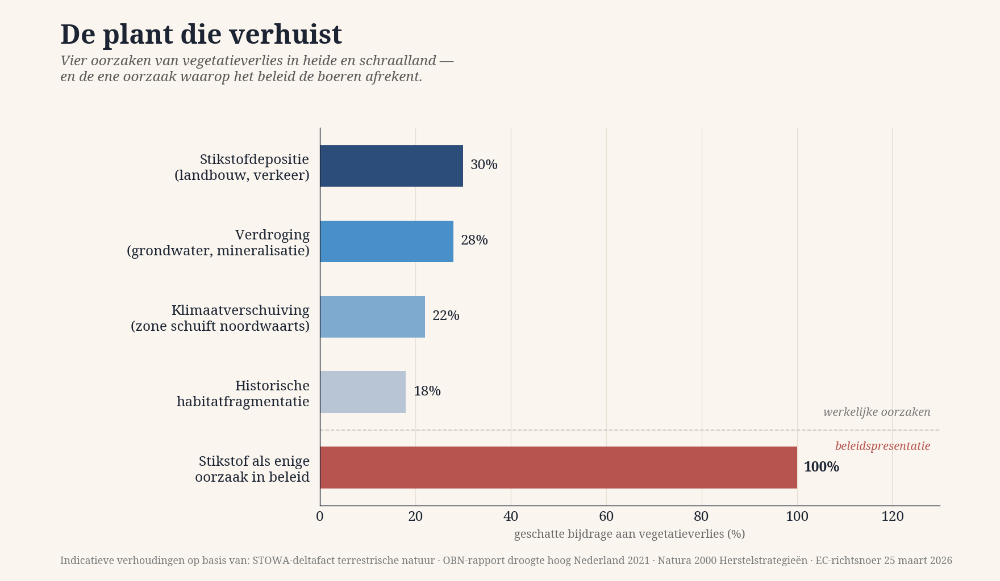

Забытый порядок
Что весит тяжело и что из этого делает пресса. Диагностический выпуск — три досье, три человека, пять диаграмм, один принцип.
июль 2026 · Якобус ван Меркстейн

Инструмент вместо мнения
Выпуски 1–4 описывали то, что я видел вокруг себя. Выпуск 5 иной: он не предлагает мнения, а вручает инструмент. К концу вы держите в руках то, чем можно оценить каждый заголовок недели по его порядку.
Письмо читателю
Этот выпуск не предлагает мнения, а вручает инструмент.

Формула успеха, которую мы разучились применять
Япония, Корея и Китай обогнали нас, потому что приняли инструмент, который мы выбросили.
Забытый порядок
Три традиции, один принцип: то, что вносит в 5 раз меньше главного фактора, не считается.

Метановая подмена
Три статьи FD за одну неделю, три инверсии веса, четыре требования к прессе.

Растение, которое переезжает
Азот, засуха, климатический сдвиг, фрагментация — и политика, видящая только один из четырёх факторов.
Несогласные
Сандра Палмен-Шланген, Ева Гонсалес Перес, Ад Бос — три проверенных носителя компаса.
Требование к читателю
Что вы можете сделать с этим инструментом — и почему именно это бумажная индустрия выносит хуже всего.